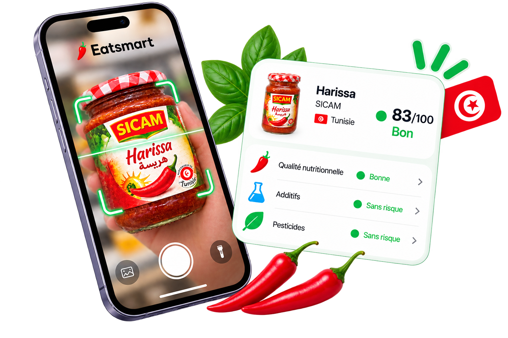

Lire l'essentiel
Les ingrédients et nutriments importants, en langage simple.
L'app pensée en Tunisie
Scannez un produit, comprenez ce qu'il contient et trouvez une alternative qui vous ressemble.
Une nouvelle habitude
Eatsmart ne vous dit pas quoi manger. Il vous donne les bonnes informations au bon moment, pour que votre choix vous appartienne vraiment.
Découvrir l'analyseLes ingrédients et nutriments importants, en langage simple.
Une indication claire, jamais un jugement définitif.
Une base de produits qui grandit avec la communauté.
En trois secondes
Ouvrez Eatsmart en magasin, placez le code-barres dans le cadre et laissez l'app faire le tri.
Fonctionne sur iOS et Android
Le produit, en clair
Un yaourt simple, avec une liste d'ingrédients courte et lisible. Voici ce qui compte.
Zoom sur la recette
Chaque ingrédient est remis dans son contexte. Vous savez ce que vous lisez, sans avoir besoin d'un dictionnaire.
Voir notre méthodeNutrition, sans alarmisme
Une idée pour demain
Les alternatives sont proposées pour vous aider à comparer, jamais pour décider à votre place.
La base grandit avec vous
Une photo de la liste d'ingrédients suffit pour commencer. Notre équipe vérifie chaque contribution avant de l'ajouter.
Contribuer à la baseDans votre poche
Gratuit, sans publicité, et conçu pour les courses de tous les jours.
